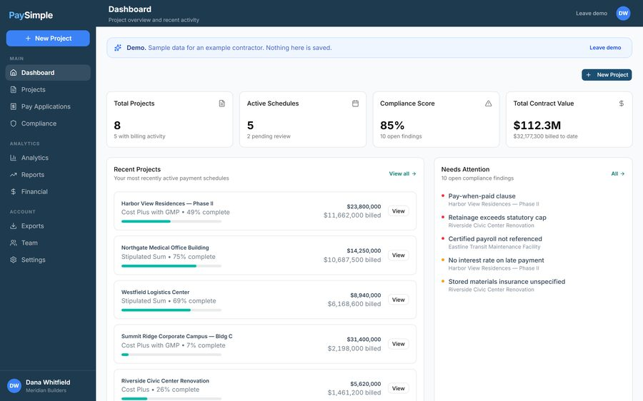

● Demo
PaySimple
A solo build that reads construction contracts and turns payment terms into a schedule, a pay application, and a compliance check. Seeded demo, not a shipped product.
View the build →Forward Deployed · AI Products
Five years in B2B SaaS: support, then analyst, then PM. I embed with the problem and ship AI products for AI-native teams, and for construction, AEC, and legal tech, where the documents are the product.

Customer incidents fell 0% after the pay application rebuild.
Pay applications move money between parties on a construction project, and the calculation logic behind them was producing customer-facing errors. The input flow was slow enough that people made mistakes upstream of the math. I led the rebuild end to end and instrumented both incident volume and input efficiency before shipping, so I'd know whether the fix actually worked.
Outcome
Incidents fell 92%. Input efficiency improved 32%. I tracked both deliberately: incident volume alone can drop for the wrong reason, like people quietly abandoning the workflow.
| Intent type | Source of truth | Resolution path |
|---|---|---|
| High-volume factual questions | One owned policy source | Self-serve, cited |
| Scope questions (which one applies) | Curated decision guide | Guided, scope-bounded |
| Account and access questions | Support knowledge base | Self-serve; exceptions escalate |
| Requires legal interpretation | None, by design | Explicit refusal → human |
Support agents were the search interface for questions the documentation already answered. The same forty or so questions arrived in a hundred phrasings, and every repeat pulled a subject matter expert away from work only they could do. I clustered a real ticket sample by what the resolution actually required, wrote the refusal path for anything needing legal interpretation, and ran a weekly triage on what the taxonomy didn't yet cover.
Outcome
No shareable numbers on this one. What matters more: an agent that's confidently wrong costs more than one that defers. Before launch, I wanted "correct" defined, and every refusal written as deliberately as every answer.

● Demo
A solo build that reads construction contracts and turns payment terms into a schedule, a pay application, and a compliance check. Seeded demo, not a shipped product.
View the build →● Live
A learning dashboard where a tutoring session updates the radar that decides what a student does next. Built with Claude Code and Claude Design.
Open the prototype →A clickable version of the argument gets in front of people while requirements are still cheap to change. That's why Beacon exists.
If an agent, a query, or a dashboard unblocks a team, I'd rather ship it than write a ticket. The support agent case above is the clearest example.
The failure log is the roadmap. I decide what gets counted, and where it lands, before anything goes live.
I came into product through the support queue, then product analyst, then PM, with a computer science degree underneath it. Before software, I coached track and field throwing events at elite and Olympic levels: developing athletes over multi-year arcs, then calling technical corrections in real time on a competition day, when the result is public and the margin for error is gone.

Profile
| Now | Product Manager, B2B SaaS |
| Path | Support → Analyst → PM |
| Study | Computer Science |
| Domains | AI-native · Construction/AEC & legal tech |
| Prior | Elite throws coach (track & field, Olympic level) |